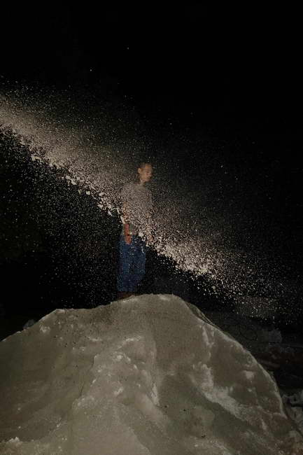
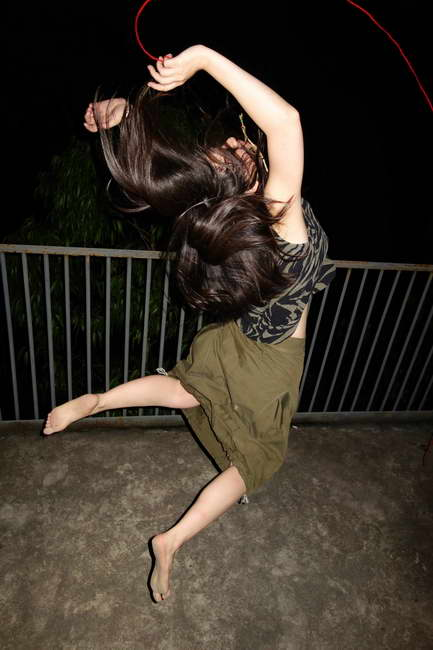
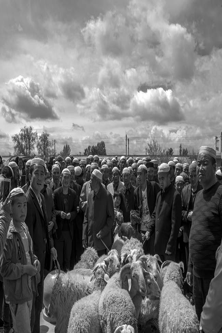

摄影资讯
> 2017第三季度索尼青年摄影师入选名单公布
2017第三季度索尼青年摄影师入选名单公布
2017-09-29 16:09:34 【专稿】
作者：未知
编辑：杨炤龙
来源：影像中国网
9月23日，据索尼官方消息，2017年第三季度索尼青年摄影师评选在中国摄影杂志社完成评选，现场通过对入围的100位青年摄影师作品进行深入评比、探讨，共有来自安徽的丁凤琴、来自甘肃的张健、来自四川的刘丹、来自杭州的许康平以及来自北京的关旖初等5位优秀青年摄影师最终入选（排名不分先后），成为2017年第三季“索尼青年摄影师发展计划”的支持对象。
此次2017索尼青年摄影师的评选工作由《中国摄影》杂志社主编晋永权主持，同时参与评选的评委还有来自陕西师范大学新闻与传播学院副教授李泛、视觉中国总编辑柴继军、著名时尚摄影师于捷和中央美院的摄影系副教授周岚等中国摄影界资深人士，评委们现场对入围作者作品、申报拍摄计划进行选评和论证，最终甄选出的前5名青年摄影师成为该项发展计划的入选者，获得来自索尼（中国）的影像器材和项目资金的支持。
2017第三季度5位入选索尼青年摄影师：


丁凤琴参选作品－《午夜剧场》
丁凤琴在重庆求学期间，曾参加重庆灰空间“乌托邦是个希腊词”展，并在十方艺术中心举办个展《午夜剧场》。青春充满着躁动、不安、焦虑、迷茫、游离、矛盾、认真、做作等各式各样的情绪与状态。自2016年起创作《午夜剧场》，共拍摄18至29岁的百位青年男女，以青春为主题，通过镜头展示现代青年人夜晚的状态。
她坚信，摄影基本的功能是记录，是个人生命体验的记录，亦是社会现场和重大历史的记录。对于她而言，对摄影的专注，对生活的深刻体会，对社会的融入，最终凝结在一张张饱含过往积淀与临场灵感的照片之中。她也在通过努力，向心中敬仰的南·戈尔丁、泰伦·西蒙、志贺里江子等摄影前辈致敬，找寻属于自己的微观叙事摄影风格。
著名时尚摄影师于捷，对此发表看法，《午夜剧场》以一套貌似很不成熟的拍摄技术实现了新青年饱含激情的自我宣泄。影像富有张力和能量，传达了当下潮流青年的大胆实验和自我放逐的典型心态。

张健参选作品－《东乡移民》
张健，甘肃省摄影家协会会员、甘肃省民间文艺家协会会员、甘肃省青年摄影家协会理事、甘肃省现代摄影学会会员。他所拍摄的参选作品《东乡移民》，题材取自于1996年疏勒河项目和2006年的引洮工程的拆迁移民。在甘肃省酒泉各县市周边，先后共安置的15.8万移民，他们的生活状态、习俗文化、儿童教育，都是张健所关注、记录的内容。张健介绍说，东乡族是甘肃省特有的少数民族，广袤的黄土地滋养了东乡族人的身体，世代传唱的花儿丰富了东乡族人的生活，穿越千年的《古兰经》指引着东乡族人的精神世界，他们是虔诚伊斯兰教教徒，有自己的语言与文明。
陕西师范大学新闻与传播学院副教授李泛，对张健表示欣赏，作为甘肃本地青年摄影师，能够深入生活，用平常视角记录东乡移民难能可贵。《东乡移民》之所以入围，评委看重的是朴实无华的镜头下那颗热爱生活、记录家乡的人文情怀。在快餐生活的当下，俯下身、镜头向下看的人文意识值得称道。在申报的作品中，《东乡移民》尤其打动评委，但影像语言表达还有上升空间，希望在以后拍摄中，坚持普世情怀的同时，影像表达叙事能够更加缜密、严谨、流畅。